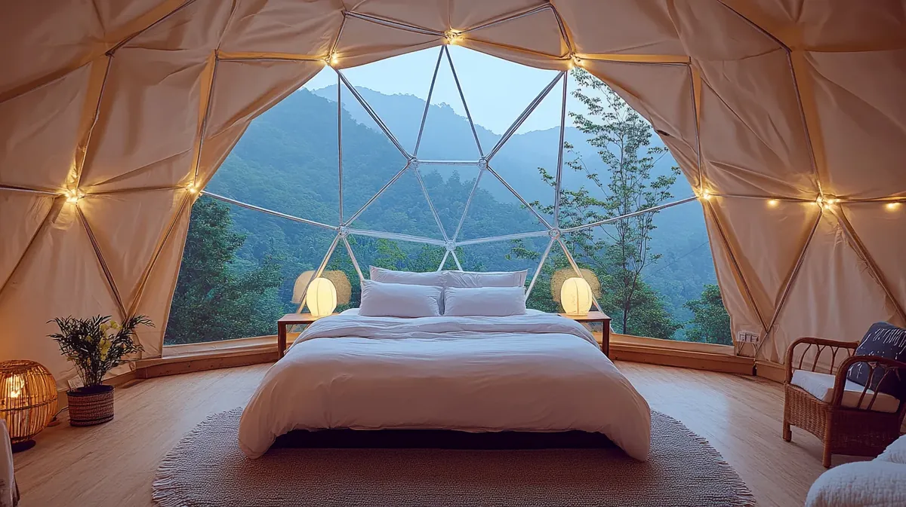
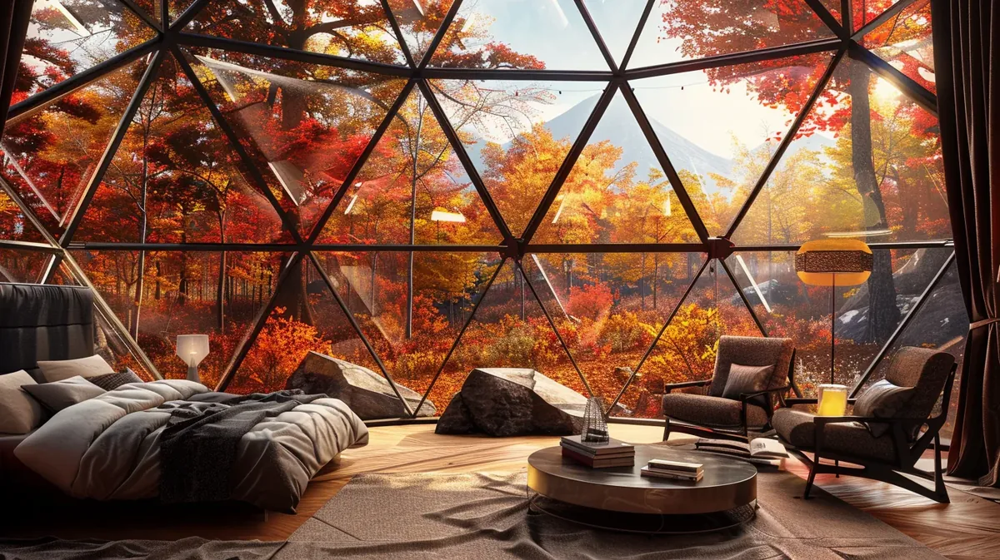

볼트 조립식 특허 기술로 완성한 극한의 구조 강도.5m~15m 8가지 사이즈, 파노라마 베이 윈도우,사계절 단열 시스템까지 갖춘 프리미엄 지오데식 돔입니다.
완전한 커스터마이징. 원하는 사이즈, 색상, 옵션 자유롭게.
인기 사양 패키지. 검증된 베스트셀러 조합으로 빠른 결정.
재고 모델 즉시 출하. 빠른 오픈이 필요할 때.


매주 글램핑 트렌드와 업계 브로셔를 이메일로 보내드립니다.
WOCS 전문가가 빠르게 견적서를 보내드립니다.